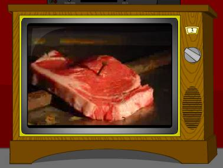

Death Metal

The deadest of all the metals...
Death Metal comes in a
range of shapes and flavours, but some of the most common are: technical;
slam; boring; and old school. Since only fakes and posers listen to anything
else, we're going to assume that old school Death Metal alone exists.
There's not a whole lot to be said about making Death Metal. Really
you should be able to do pretty much anything and as long as it isn't
Disneyfied major key schlop it should graft its way into a Death Metal
context. Baroque riffs, horror movie riffs, sci-fi riffs, "gorey"
riffs (if a riff can sound "gorey" - is that what the chug is for?),
there's a huge range of things you can chuck into your Death Metal song
and so long as it borders on the atypical it probably won't bore someone
(though that someone might be camo-pants Joe who wears a
1944 IJAAS bandana and drinks the purple kool aid because the
red one "has fruit in it").
In terms of themes, you're going to want to focus on themes of Death. Duh.
No brainer. That's things like dying; being dead; killing people; being killed;
killing the dead (e.g. zombies); being killed by the dead (e.g. zombies,
liches, mummies, skeletal hordes, etc.); since Deicide ruined genrefication
before it'd even started by being a Black Metal
band and playing Death Metal music (let's not mention Morbid Angel's claim that
Altars of Madness is a Black Metal album),
technically you can even sing about Satan and it's still "Death Metal" if it
sounds a certain way.
To make our Death Metal, we're going to need a few basic tools. These are:
- A guitar
- An amp (or, if you have no money, a free "Amp Simulator")
- Drums (or a drum machine - this can be software too)
- A DAW
- An external sound card or mixer
- XLR and line cables (min 2 of each)
- A microphone (max 8 - each mic needs XLR)
- Each XLR needs a port on sound card/mixer)
The steps involved
in making Death Metal are unfortunately complex:
- Make sure you've attended several years of music college
- Alternatively, you can listen to the following for five years while you sleep:
- Atonal classical
- Horror movie soundtracks
- Jazz records
- The sound of industrial machinery
- Make sure you've summoned the Spirit of Rot and Decay into your studio
- Make sure all of your gear is plugged in/ready to record:
- Guitar into amp or direct to DAW via computer if using "Amp Simulator"
- Amp micced up if necessary; else direct into DAW via mixer/sound card
- Drums micced up or machine into DAW via mixer/sound card (if not software)
- Generally, for doing Death Metal, you want the BEST possible sound
- Mic your drums up so that every cymbal, tom, cowbell and maracca can be fully manipulated by engineer
- If you don't have an engineer, Death Metal isn't for you
- Sound card or mixer is plugged into DAW
- Open your DAW
- Arm track(s) for recording
- Hit record
- Tell your drummer to hit things (or DIY)/hit your drum machine hard and fast with precision and rhythmic/metrical complexity
- Compound time signatures and quintuple/septuple metres are in
- BPMs should exceed 300 where possible
- You can never go wrong with adding more blast beats
- 15/16 is not an odd time signature
- Hit your drummer hard and fast (with or without precision) for better results
- Swap to guitar (arm new track[s]), chug rhythmic whirlpools and tremolo glissandos
- Emphasise harmonic and melodic minors, diminished scales, Arabic and Gypsy scales
- Don't be afraid to play something that sounds really nasty
- Also make sure it doesn't sound stupid
- Alternate rhythms as much as possible; confuse your audience!
- Harmonies should be disharmonious wherever possible
- It's never too late to start chugging
- Pinch harmonics are a necessity and should be used in every riff
- Arguably they should be used in every bar
- Pitch shift an extra guitar track -12 semitones/-1 octave for an awful bass sound!
- Alternatively, pay one of your friends some real money to record bass for you
- Swap your guitar out for a microphone and start BELLOWING DISTURBING VISIONS
- These can include but are not limited to:
- Blood, Gore and Guts
- Rot, Stench and Decay
- Murder and/or Manslaughter
- Suicide (parental warning)
- Medical malpractice
- Necromantic Rituals
- Sci-fi Vivisections
- Gangrene
- Finally, use software like MHORSE to make your product sound unnecessarily sleek:
- Max out that Motown filter for smooth lows and sultry highs
- New York compression for stupidly loud kicks (do yours click yet?)
- "Shine;" "body;" "punch;" "mellow;" there's only one of these you don't want (it's the relaxing one)
- Excite? You'd better believe it.
- This isn't Black Metal, but you can whack that TAPE up
- Deharsh? Wrong.
Back Home
{kind=link}